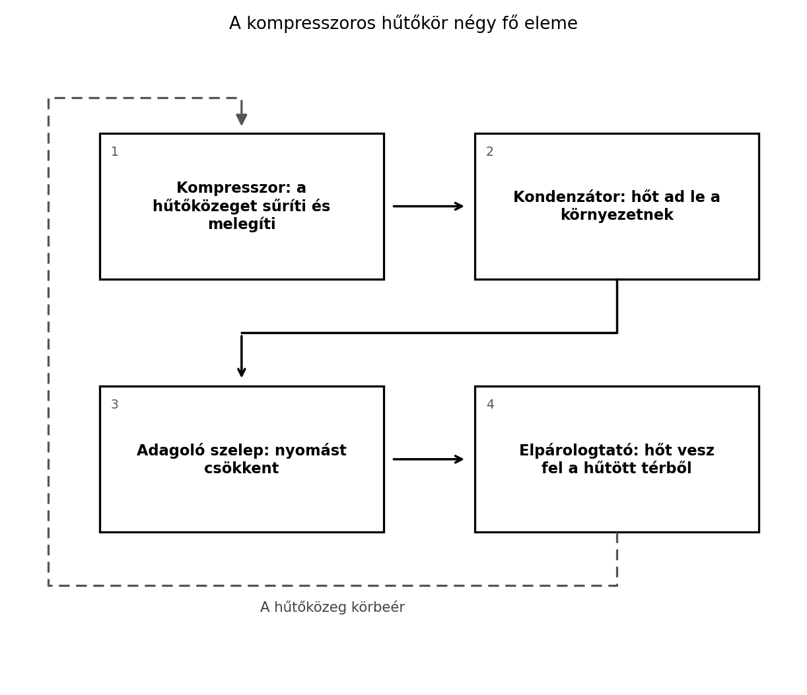

A pékség hűtőkamrája hajnalban a kelleténél melegebb, a hűtő-kelesztőben a tészta idő előtt megkel, a sokkoló pedig nem hűti le a krémet a megadott idő alatt. A pék ilyenkor először a kijelzett hőmérsékletben és a hűtőgép működésében kételkedik, és joggal: ha a hűtőkör hibás vagy a mérőműszer pontatlan, a termék visszafordíthatatlanul romlik, és élelmiszer-biztonsági kockázat is keletkezhet. Ebben az alfejezetben a hűtőgép és a mérőműszerek működését tanuljuk meg olyan szinten, ahogy a péknek a napi üzemben ellenőriznie kell.
A kompresszoros hűtőgép nem „hideget termel”, hanem hőt szállít a hűtött térből a környezet felé. Ezt a négy fő elemből álló zárt körben keringő hűtőközeg végzi.

A körben az energiaáramlás iránya mindig a meleg felől a hideg felé mutat. Az elpárologtatóban a hűtőközeg alacsony hőmérsékleten elpárolog, ehhez hőt von el a kamra levegőjétől. A kompresszor ezután összenyomja a gőzt, amitől annak hőmérséklete és nyomása megemelkedik. A kondenzátorban a forró gőz lehűl és lecsapódik, a felvett hőt a környezeti levegőnek adja át. Az adagoló szelep a folyadék nyomását visszacsökkenti, mielőtt az újra az elpárologtatóba jutna.
Definíció. Kompresszoros hűtőgép. Olyan berendezés, amely a hűtőközeg elpárologtatásakor felvett hőt mechanikai munka (kompresszió) segítségével magasabb hőmérsékletű közegnek adja le. A hideg oldal így a hűtött tér lesz, a meleg oldal a kondenzátor környezete.
Definíció. Elpárologtató. A hűtőkör azon hőcserélője, amelyben a hűtőközeg elpárolog, miközben hőt von el a hűtött közegből (a pékségben általában levegőből vagy tészta közvetlen hűtésére szolgáló sóoldatból, glikolból). A felülete hideg, ezért itt csapódhat le és fagyhat meg a levegő nedvessége.
Definíció. Kondenzátor. A hűtőkör azon hőcserélője, amelyben a kompresszor által összesűrített, magas hőmérsékletű hűtőközeg-gőz hőt ad le a környezetnek, és lecsapódik (kondenzálódik). A sütőüzemi hűtőgépeknél ez gyakran bordáscsöves léghűtéses hőcserélő.
Definíció. Adagoló (expanziós) szelep. A kondenzátorból érkező folyékony hűtőközeg nyomását csökkentő, és az elpárologtatóba jutó mennyiséget szabályozó elem. A nyomáscsökkenés következtében a hűtőközeg lehűl, és részben elpárolog, mielőtt az elpárologtatóba lépne.
Definíció. Hőcserélő. Olyan berendezés vagy szerkezeti elem, amely két közeg falon keresztül történő hőcseréjét teszi lehetővé anélkül, hogy a közegek keverednének. A pékségben hőcserélő az elpárologtató, a kondenzátor, a kelesztőkamra fűtő/hűtő kalorifere, a melegvíz-tároló fűtőcsőkígyója is.
Szabály. A hűtőkör működési feltétele. A kompresszoros hűtés csak akkor működik, ha a hűtőközeg a körfolyamatban folyadék–gőz halmazállapot-változáson megy át. Ha a hűtőközeg elfolyik, a kör meghibásodik, és a hűtőteljesítmény lecsökken vagy megszűnik. A hűtőközeg utántöltését, a kör megbontását kizárólag hűtőgépszerelő szakember végezheti.
Előírás. Hűtőközegek kezelése. A fluorozott üvegházhatású gázokkal működő hűtőberendezések kezelésére, karbantartására, szivárgásvizsgálatára és a hűtőközeg visszanyerésére az uniós és magyar előírások képesítéshez kötött szakembert, és gyakran nyilvántartást is előírnak; a pontos követelményeket a hatályos F-gáz rendelet és annak magyar végrehajtása adja (ellenőrizendő: hatályos F-gáz előírások, a berendezés típusa és hűtőközegtöltete). A pék ezt a munkát nem végezheti, de ellenőrizheti, hogy a karbantartási dokumentumok rendben vannak.
Gépbiztonság. Hűtőberendezésen, hőcserélőn, ventilátoron a tanuló csak betanítás után, felügyelettel végezhet külső szemrevételezést, tisztítást, leolvasztást. Bármilyen beavatkozás előtt a gépet le kell állítani, áramtalanítani, és újraindítás ellen biztosítani kell; a forgó ventilátorlapátokat meg kell várni, amíg teljesen megállnak. A védőrácsot, burkolatot eltávolítani nem szabad.
A hűtőkamra elpárologtatóján a levegő lehűl, és a benne lévő nedvesség kicsapódik. Ha a felület hőmérséklete 0 °C alá esik, a csapadék jégként ráfagy. A jégréteg hőszigetelőként viselkedik, ezért romlik a hőcserélő teljesítménye: a kamra melegszik, a kompresszor többet dolgozik, az energiafogyasztás nő, a termékek hőmérséklete emelkedik.
Szabály. Leolvasztás célja. Az elpárologtató felületéről a jeget időszakosan el kell távolítani. A leolvasztás történhet elektromos fűtéssel, meleg gázzal, vagy a kamra leállításával és a jég természetes felolvadásával. A leolvasztóvíznek el kell folynia, és nem kerülhet élelmiszerre vagy csomagolóanyagra.
Definíció. Hiba és korrekció. A műszer hibája = mutatott érték − valós (etalon) érték; a korrekció = −hiba, vagyis ezt kell a mutatott értékhez adni. Ha a műszer kevesebbet mutat a valósnál, a hiba negatív, a korrekció pozitív.
Példa. Egy hűtőkamra hőmérője reggel 4,0 °C-ot mutat, az etalon hőmérő ugyanabban a légtérben 4,8 °C-ot mér. A beépített hőmérő hibája , a korrekció tehát : a mért értékhez -ot kell adni. A tényleges hőmérséklet , ami a tanulási példa 0–5 °C-os hűtőkamra-határán belül van (ugyanazt a határt használja a nyersanyag-tárolás alfejezete is), de a ±0,5 °C-os műszerpontosság miatt nincs tartalék; ezért a kamra hűtését ellenőrizni kell, és a beépített hőmérőt kalibrálni vagy kalibráltatni kell (ellenőrizendő: az üzemi HACCP-terv hűtőkamra-hőmérséklet határa).
Példa. A kelesztőkamra higrométere 72%-ot mutat, de a kamrában elhelyezett, kalibrált pszichrométer vagy digitális etalon 78% relatív páratartalmat mér. A hiba százalékpont, a korrekció százalékpont. A ragadós, nedves, foltos kalácsfelület oka tehát nemcsak a tészta hibája lehet, hanem a valósnál alacsonyabbnak mutatott páratartalom, ami miatt a pék a kijelző alapján feleslegesen növelte a párásítást. (Fordítva: ha a műszer a valósnál többet mutat, a pék csökkenti a párásítást, és a felület bőrösödik, repedezik.)
A pékségi hőmérséklet-, nyomás- és páratartalommérés csak akkor megbízható, ha ismerjük a műszer három alapjellemzőjét.
Definíció. Méréshatár. Az a tartomány, amelyben a műszer hitelesíthető vagy a gyártó szerint használható. Például egy maghőmérő méréshatára és lehet; ezen kívül nem szabad mérni, mert a műszer károsodhat vagy hamis értéket ad.
Definíció. Felbontás. A kijelző legkisebb leolvasható osztása vagy digitális léptéke. A felbontású hőmérő egymástól megkülönbözteti a különbséget, de ez nem jelenti a mérés pontosságát.
Definíció. Pontosság. A műszer által mutatott érték és a valós érték megengedett eltérése; szokásos jelölése érték (például ). Ha egy műszer -ot mutat, és pontossága , akkor a valós érték várhatóan – közötti.
Szabály. Jó mérési gyakorlat. A mérést csak a méréshatáron belül végezzük; a leolvasás előtt várjuk meg a jel stabilizálódását; a hőmérő érzékelője a mérendő közeggel megfelelően érintkezzen; maghőmérőt minden mérés előtt és után fertőtlenítsünk. A hitelesítés és a kalibrálás igazolja a műszer nyomonkövethetőségét; az üzemi gyakorlatban etalonműszerhez vagy hitelesített referenciához hasonlítjuk (ellenőrizendő: az üzemi mérésügyi és minőségbiztosítási előírások, a HACCP-terv által előírt gyakoriság).
A táblázat a leggyakoribb pékségi mérések műszertípusait és jellemző szempontjait foglalja össze.
| Mérendő mennyiség | Műszertípus | Mérési szempont |
|---|---|---|
| Léghőmérséklet | folyadékos, bimetál, digitális termoelemes, ellenálláshőmérő | az érzékelő ne érjen falhoz, fagyasztónál jéghez; stabilizálódás után olvassuk le |
| Termékmag-hőmérséklet | digitális maghőmérő | a szúrás középpontba kerüljön; fertőtlenítés minden termék után |
| Relatív páratartalom | higrométer, pszichrométer, kapacitív érzékelő | a kamra jellemző pontján, ne párásító közelében mérjünk |
| Nyomás | Bourdon-csöves manométer, digitális nyomástávadó | a hűtőkörnél csak szakember mérhet; a gőz- és vízhálózatnál a pék leolvashat |
A pék napi feladata nem a hűtőkör szerelése, hanem a működés és a mérési értékek felügyelete. Az alábbi ellenőrző lista segít elkülöníteni a gép hibáját a műszer hibájától.
A gyakorlatban a legegyszerűbb ellenőrzés a jég-víz keverék. Egy pohárba tört jeget teszünk, felöntjük kevés vízzel, és keverés közben az etalonhőmérőt beletartjuk. A stabilizálódott értéknek körül kell lennie. A vizsgált hőmérőt ugyanabba a keverékbe téve leolvassuk az eltérést. Forrásban lévő víznél a környezeti légnyomástól függően alatti érték lehet; ezért pontosabb az etalonos összehasonlítás a működési tartományon belül. A higrométert telített sóoldattal (például NaCl-oldattal) zárt edényben ellenőrizhetjük: szobahőmérsékleten a levegő relatív páratartalma 75% körül alakul (ellenőrizendő: a sóoldat pontos referenciaértéke a hőmérséklettől és a só minőségétől függ; az üzemi kalibrálási utasítás adja a módszert). A műszer hibáját felírjuk, és a kijelzett értékeket ennek megfelelően javítjuk, vagy a műszert kalibráltatjuk.
Egy pékségben a kelesztőkamra higrométere tartósan 10 százalékponttal kevesebbet mutatott a valósnál. A pék emiatt mindig magasabbra állította a párásítást, hogy a kijelző a kívánt 80%-ot mutassa. A tényleges páratartalom így 90% fölé emelkedett; a kalácsok felülete nyirkos, ragadós lett, a vetés után a tészta összeesett, a termék héja elvált. Amikor a karbantartó kalibrált etalonnal lemérte a kamrát, kiderült az eltérés. A tanulság: a szabályozórendszer csak annyira pontos, mint a mérőérzékelője; ezért a péknek nem elég a kijelzőt néznie, időszakonként etalonnal is össze kell mérnie.
A hűtőberendezés és a mérőműszerek helyes működése közvetlenül befolyásolja a termékminőséget és az élelmiszer-biztonságot. A késztermék minőségi jellemzői ebben a témában inkább a hűtött tészta vagy a kelesztett termék állapotára vonatkoznak: a hűtőkamrából kivett tészta maghőmérséklete a technológiai előírás szerinti tartományban legyen; a kelesztőkamrában a felület ne száradjon ki, de ne is tapadjon; a sokkolóban hűtött termék maghőmérséklete a csomagolás előtt elérje a technológiai határt. A hűtőgép műszaki ellenőrzése során azt figyeljük, hogy a kijelzett és az etalonnal mért értékek eltérése ne haladja meg a műszerre megengedett pontosságot, a kamra hőmérséklete pedig ne ingadozzon a HACCP-terv határain túl (ellenőrizendő: az üzemi technológiai lap és HACCP-terv konkrét határai).
Hiba 1. A pék a hűtőkamra beépített hőmérőjét soha nem hasonlítja össze etalonnal, és a rossz kijelzésre alapozva emeli a hűtési teljesítményt. Következmény: a tényleges hőmérséklet túl hideg, a tészta megfagy, romlik a szerkezet; vagy túl meleg, és beindul a nem kívánt erjedés. Megoldás: rendszeres kalibrálás, naplózás, korrekció.
Hiba 2. A hűtőkamra elpárologtatójáról a jeget nem távolítják el, mert „úgyis leolvad magától”. A jég hőszigetelőként hat, a kamra melegszik, a kompresszor folyamatosan dolgozik, túlmelegszik, a fogyasztás nő. Megoldás: a leolvasztási terv szerinti ciklusok, szükség esetén kézi leolvasztás a gépkönyv alapján.
Hiba 3. A pangó leolvasztóvíz a hűtőkamra padozatán áll, és onnan ráfröccsen a termékre. Higiénia. A pangó víz mikroorganizmusokat, penészgombát szaporíthat, és keresztszennyezést okoz. Megoldás: a lefolyót rendszeresen tisztítani, a vízelvezetést ellenőrizni, a leolvasztás után fertőtleníteni.
Hiba 4. A higrométer érzékelőjét a párologtató vagy a gőzbefúvás közelébe helyezik, ezért a kijelzés nem a kamrára jellemző értéket mutatja. Megoldás: az érzékelőt a kamra azon pontjára kell tenni, ahol a tészták kelesztése ténylegesen történik, és a levegőmozgást figyelembe véve.
1. Igaz vagy hamis? A kompresszoros hűtőgép a hideget állítja elő, ezért a kondenzátor hűt. Indokold.
2. Sorold fel a hűtőkör négy fő elemét a hűtőközeg áramlási irányában.
3. Egy hűtőkamra beépített hőmérője -ot mutat, az etalon -ot. Mekkora a tényleges hőmérséklet és a korrekció?
4. Miért kell leolvasztani az elpárologtatót?
5. Mi a különbség a felbontás és a pontosság között?
6. Ki végezheti a hűtőközeg utántöltését és a hűtőkör megbontását?
1. feladat (A). Nevezd meg a kompresszoros hűtőkör elemeit, és írd le mindegyik szerepét egy-egy mondatban.
2. feladat (A). Egy digitális hőmérő méréshatára és , felbontása , pontossága . A műszer -ot mutat. Milyen tartományban lehet a valós hőmérséklet?
3. feladat (B). A kelesztőkamra higrométere 68%-ot mutat, az etalon szerint a valós relatív páratartalom 76%. Számítsd ki a korrekciót, és add meg, mennyire kellene állítani a párásítást, hogy a tényleges érték 80% legyen.
4. feladat (B). Egy hűtőkamra beépített hőmérője 3,8 °C-ot mutat, de a hitelesített etalon szerint a tényleges hőmérséklet 4,9 °C. Mekkora a mérési hiba? Hogyan kell értelmezni az üzemi HACCP-tervben rögzített 5 °C-os határt (tanulási példa), ha a kamra beépített hőmérője hibás? (ellenőrizendő: az üzemi HACCP-terv határértéke)
5. feladat (C). Egy hűtő-kelesztő kompresszora folyamatosan jár, de a kamra mégsem éri el a beállított 4 °C-ot. Sorold fel a lehetséges okokat, és írd le, melyiket hogyan ellenőriznéd a pék szintjén.
6. feladat (D). A kelesztőkamra higrométerét telített NaCl-oldat fölött, zárt edényben ellenőriztük: a referencia kb. 75%, a műszer 70%-ot mutatott. Mekkora a hiba és a korrekció? A kelesztési technológia 80% relatív páratartalmat ír elő: mekkora értéket kell a kijelzőn látni (a párásítás szabályozójának beállításához), ha a hiba állandó? Miért nem elég egyetlen ponton ellenőrizni a higrométert, és hogyan befolyásolja a hőmérséklet a sóoldatos referenciát?
Önellenőrzés – válaszok
1. feladat (A) – megoldás. - Elpárologtató: a hűtőközeg elpárolog, hőt von el a hűtött térből. - Kompresszor: összesűríti a hűtőközeg-gőzt, növeli a nyomást és a hőmérsékletet. - Kondenzátor: a forró gőz lehűl, kondenzálódik, hőt ad le a környezetnek. - Adagoló szelep: a folyadék nyomását csökkenti, szabályozza az elpárologtatóba jutó mennyiséget.
2. feladat (A) – megoldás. A pontosság . Ha a műszer -ot mutat, a valós hőmérséklet: és közötti tartományban van.
3. feladat (B) – megoldás. A higrométer hibája: százalékpont (a műszer 8 százalékponttal kevesebbet mutat), a korrekció százalékpont. A valós 80%-hoz a kijelzőnek -ot kell mutatnia (ha a hiba állandónak tekinthető); a párásítást addig állítjuk, amíg a műszer 72%-ot jelez, és a higrométert kalibráltatjuk. Ellenőrzés visszaszámolva: valós. Ha a kijelző szerint 88%-ra párásítanánk, a valós érték 96% lenne (kondenzáció, szétfolyó tészta).
4. feladat (B) – megoldás. A hiba: , a korrekció ; a beépített hőmérő ennyivel kevesebbet mutat. A kamra tényleges hőmérséklete , ami éppen a tanulási példaként használt 5 °C küszöb alatt van (a beépített hőmérő alapján 1,2 °C tartalékot látnánk, valójában csak 0,1 °C van). Ha az üzemi HACCP-terv 5 °C határt ír elő a hűtőkamrára, akkor a kamra megfelel, de a mérési bizonytalanság miatt érdemes a határtól tartalékkal távolabb tartani; a beépített hőmérőt kalibrálni kell, és a döntést a HACCP-dokumentációba fel kell jegyezni (ellenőrizendő: az üzemi HACCP-terv és a 852/2004/EK szerinti nemzeti útmutatók hőmérsékleti határai és tűrései).
5. feladat (C) – megoldás. Lehetséges okok: - Az elpárologtató jeges, ezért rossz a hőcsere. - A kondenzátor bordái porosak, a hőleadás gátolt. - A kamraajtó tömítése tömítetlen, meleg levegő szivárog be. - A hűtőközeg mennyisége alacsony (szivárgás). - A hőmérséklet-érzékelő vagy a szabályozó hibás. Ellenőrzés: szemrevételezés, ajtózárás ellenőrzése, az elpárologtató jegesedésének vizsgálata, a kijelzett és etalon hőmérséklet összehasonlítása, a kondenzátor tisztasága. A hűtőközeg szintjét és a hűtőkör nyomását szakember ellenőrizheti.
6. feladat (D) – megoldás. A higrométer hibája: százalékpont, a korrekció százalékpont. A kamra valós 80%-os páratartalmához a kijelzőn -ot kell látni, tehát a párásítás szabályozóját (amely ezt a higrométert használja) úgy állítjuk, hogy a kijelzett érték 75% legyen; a műszer kijelzőjét magát nem állítjuk. Ellenőrzés: valós; a 85%-os kijelzés valójában 90%-os kamrát jelentene. A hiba nem biztos, hogy állandó: ezért több ponton (pl. egy második sóval, más referenciaértéken) is ellenőrizni kell, a telített sóoldat referenciaértéke pedig kissé függ a hőmérséklettől (ellenőrizendő: a sóoldat referenciatáblázata).
A kompresszoros hűtőgép hőt szállít: az elpárologtató hőt von el a hűtött térből, a kompresszor a hűtőközeget összesűríti, a kondenzátor hőt ad le, az adagoló szelep nyomást csökkent. A hőcserélőkben a közegek keveredés nélkül cserélnek hőt, a kondenzátor a meleg oldal. Az elpárologtató jegesedése miatt a hőátadás romlik, ezért szükséges a leolvasztás. A mérőműszerek jellemzője a méréshatár, a felbontás és a pontosság; a pék hőmérőt etalonnal, higrométert telített sóoldattal ellenőrizhet. A hűtőközeg kezelése kizárólag szakember feladata; a pék a hűtőberendezés külső ellenőrzését, a naplózást és a jelet adást végzi.
Továbbvitt eredmény. A hűtőkör elemeinek, a hőcserélő és leolvasztási ismereteknek, valamint a hőmérséklet- és páratartalommérés szabályainak alkalmazása elengedhetetlen a(z) Kelesztőkamrák és beállításuk, a(z) Hűtő-kelesztő berendezések és gépi kelesztők, valamint a(z) Sütőipari hűtés és fagyasztás alfejezetekben; a méréstechnikai alapok a(z) Liszttárolás és lisztszállítás berendezései silóinak folyamatos hőmérséklet- és nedvességfigyelésénél is visszatérnek.
A hűtőközegek kezelésére vonatkozó uniós F-gáz rendelet ((EU) 2024/573, amely az 517/2014/EU helyébe lépett; ellenőrizendő) és magyar végrehajtási szabályainak pontos követelményeit, valamint a hűtőkörök karbantartására és szivárgásvizsgálatára vonatkozó gyakoriságokat a kiadás előtt ellenőrizni kell a hatályos jogszabályokban és a berendezés gyártói dokumentációjában. A hűtőkamrákra, kelesztőkamrákra vonatkozó hőmérsékleti és páratartalom-határértékeket az üzemi HACCP-terv és a technológiai lapok adják; az itt bemutatott értékek tanulási példák. A mérőműszerek hitelesítésére, kalibrálására vonatkozó mérésügyi előírásokat és a gyakorlati módszereket (jég-víz keverék, sóoldat) az aktuális szabványok és az üzemi minőségbiztosítási utasítások szerint kell pontosítani.